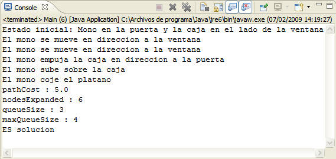

| El mono y el plátano |
Un mono está en la puerta de la habitación. En el centro de la habitación hay un plátano colgado del techo, pero no puede alcanzarle desde el suelo. En la ventana de la habitación hay una caja que el mono puede mover y sobre la que puede subirse para alcanzar el plátano. El objetivo del juego consiste en que el mono consiga el plátano realizando acciones como moverse por la habitación, mover la caja a lo largo de la habitación y subirse sobre la misma, para conseguir las condiciones necesarias para realizar la operación de coger el plátano.
En esta heurística necesitamos conocer la posición del mono, la posición de la caja y si el mono está situado sobre la caja, por lo que resulta necesario definir los valores que tendrían en cada caso. Una posible representación sería: Posición del mono: Posición de la caja: Posición del mono sobre la caja: Declaramos valores constantes que se le asignan a la heurística según la posición tanto del mono como de la caja.
Algoritmo AStarSearch o A*: Combina los algoritmos de búsqueda primero en anchura y primero en profundidad, aplicándolos en la función: f'(n) = g(n) + h'(n) = Primero en Anchura + Primero en Profundidad = Coste real hasta el nodo n + Estimación del coste mínimo desde el nodo n hasta el objetivo Se utiliza el algoritmo que genera la solución óptima, si esta existe, ya que se dispone de una representación bastante compacta y un número de los mismos suficientemente limitados debido al gran número de estados inalcanzables. Conociendo la implementación de la búsqueda A*, se sabe que guarda los nodos en una cola de prioridad, para ser evaluados y expandidos, por lo que al disponer del espacio de estados ya descrito resulta eficaz aplicar esta búsqueda, obteniendo así en un tiempo y espacio mínimos una solución óptima 
Estado ( Posición del mono en la habitación,
Posición de la caja en la habitación, Mono sobre la caja, Mono coge
el plátano )
Resulta evidentemente necesario conocer la posición de los elementos
móviles existentes en el juego y en caso de conseguir que dichos
elementos se sitúen en una misma posición, tener conocimiento de la
sobreposición de los mismos (siendo una única forma posible, el Mono
sobre la Caja), por lo que la representación de un estado se
expande, añadiendo este valor a los dos datos iniciales. Para hacer
más evidente la verificación de la obtención de una solución se
añade a la representación el valor solución, o en este caso la
posesión del plátano por parte del mono. Al añadir otro elemento a
la tupla podrían multiplicarse el número de estados posibles, pero
al ser una condición tan significativa, aumenta de una forma
minúscula el número de estados. Estados inalcanzables: Estado inicial: Estado final: |
| Diagrama UML |
A continuacion se expone el diagrama uml de este juego para aportar informacion adicional sobre su implementacion.
|